- & Yet One Arrives Somehow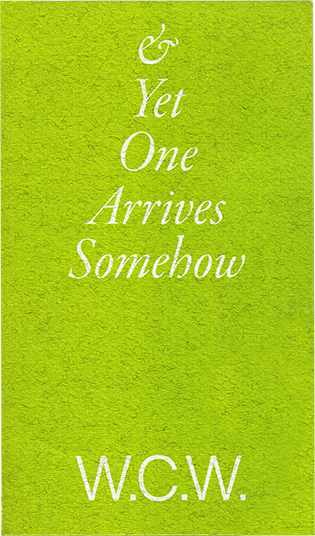
- 2001: It’s not love.*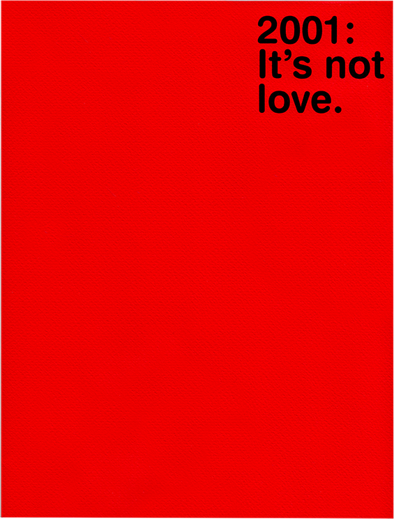
- a thing is a hole in a thing it is not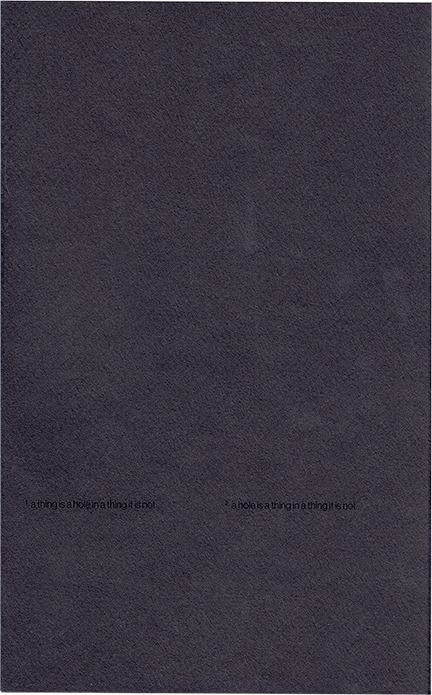
- Constructive Ambiguity*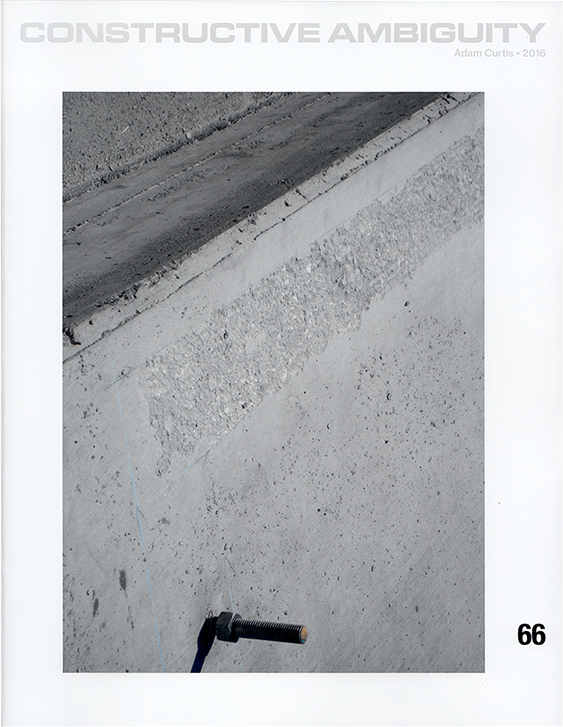
- Cosmic Wealth Recirculation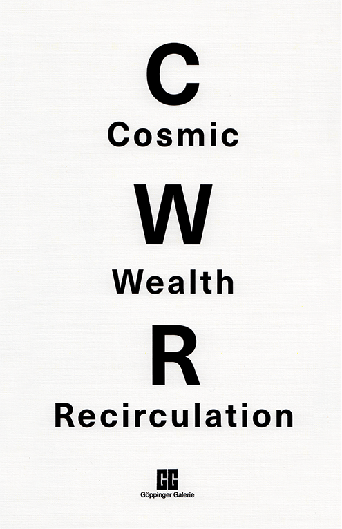
- Degree Project Can Be Fun*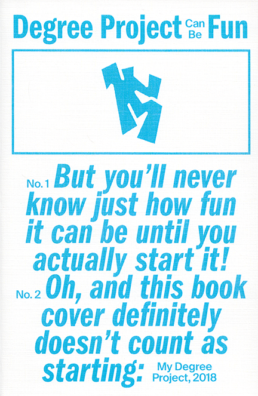
- Demands of the Transactional World*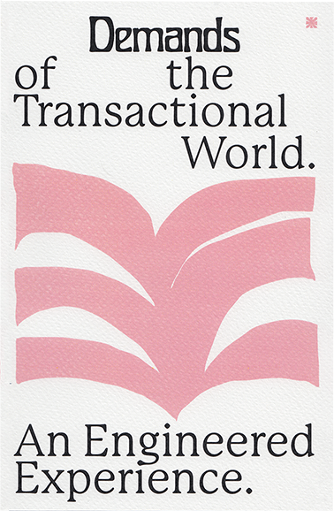
- Do Not Shake! Do Not Shake!*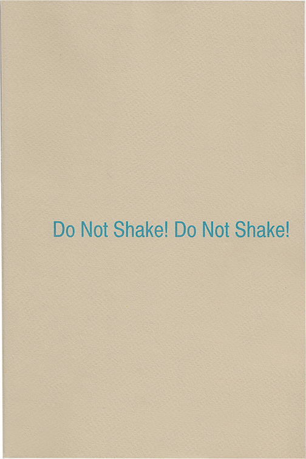
- Donald Judd: Carvings*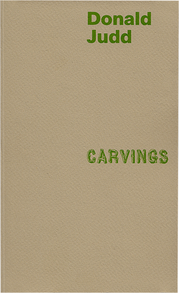
- earthwerk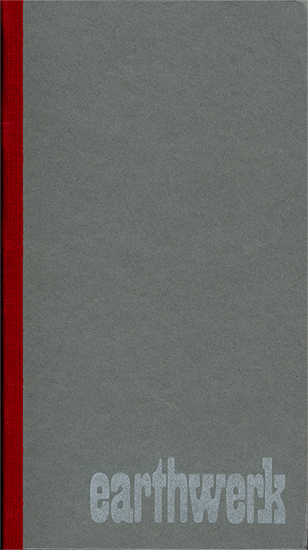
- Everything Becomes Instrumental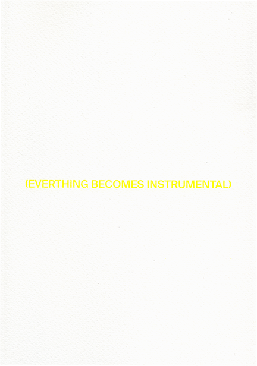
- Executiv Funktion*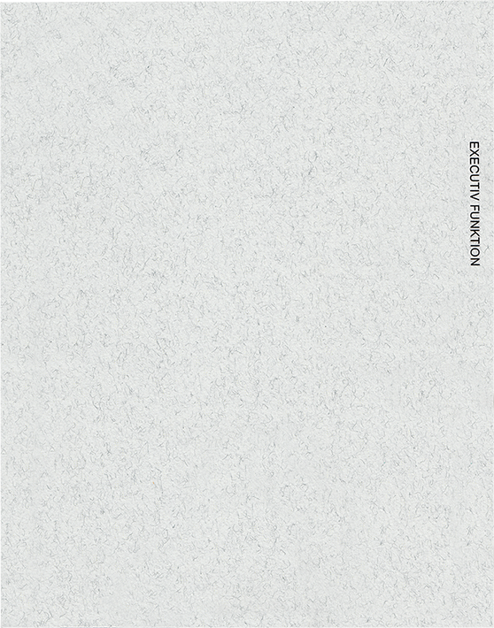
- Flat Waste*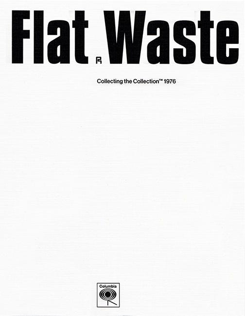
- Gestalt Don’t Halt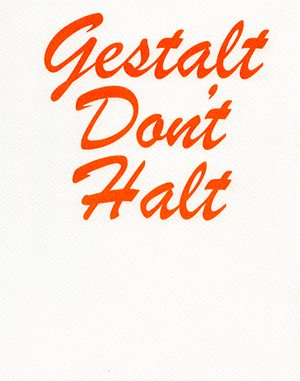
- Happiness is in the Doing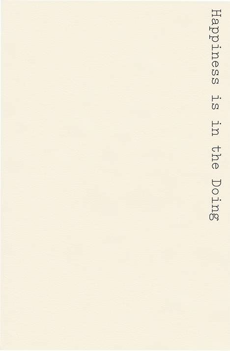
- I’m Every Woman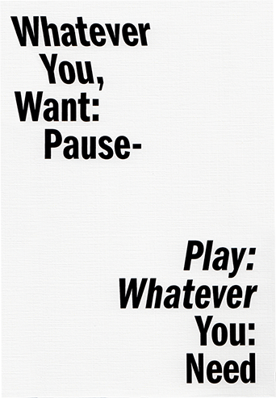
- It’s Not You: We Are Toddlers, We Are Lazy, It’s Your Phone.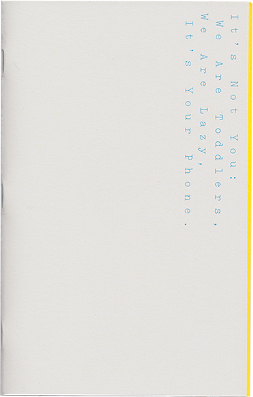
- Neuedisme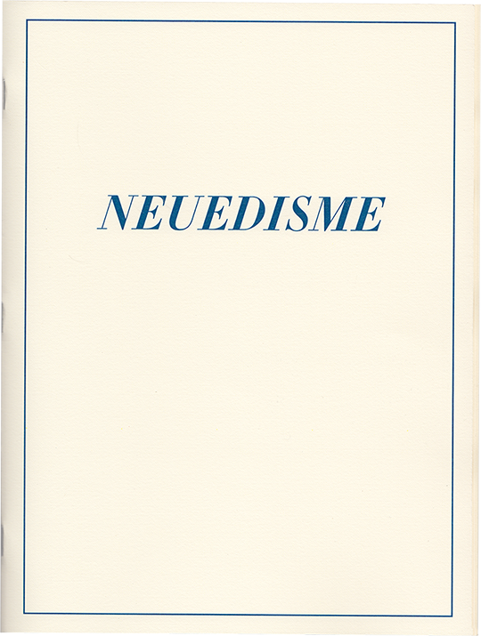
- Opening the Curtain*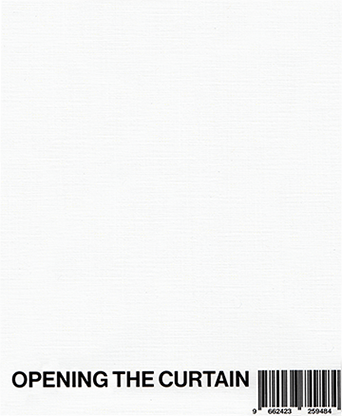
- Palermo Meat*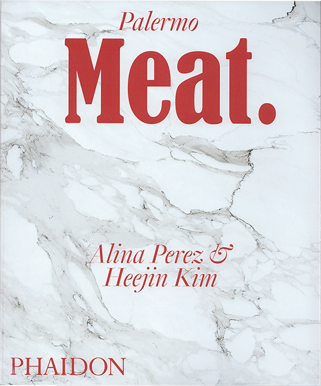
- Patient Belongings*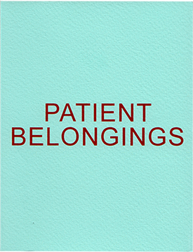
- poppy, lily, azalea, rose, violet*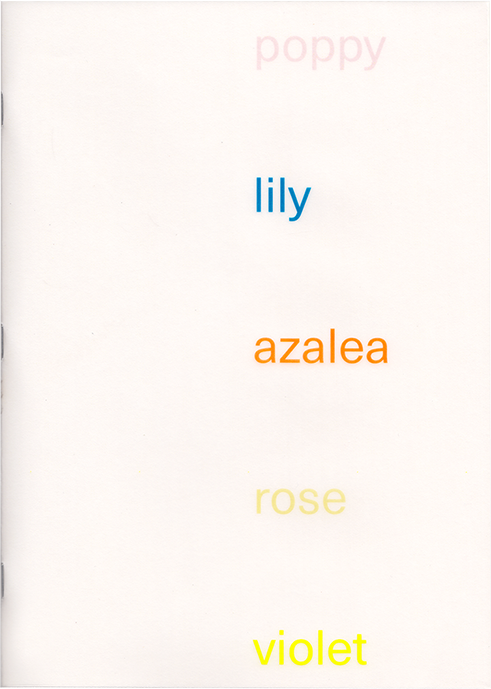
- Radical Reduction*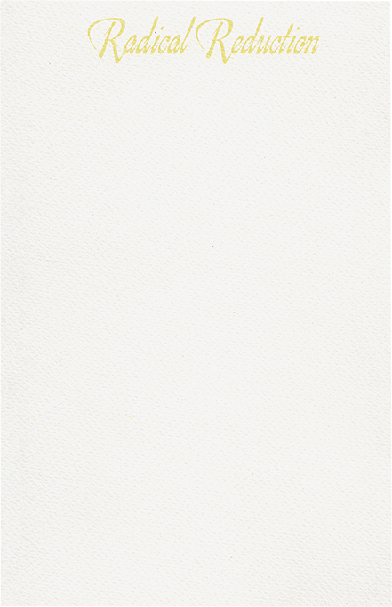
- Radical Soft Goods: Beryl Korot at documenta 6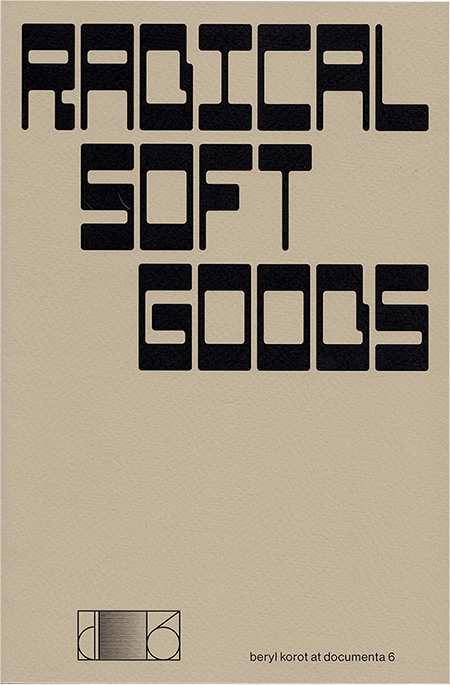
- Splash!*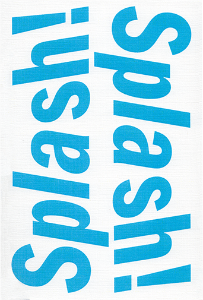
- Structural Design

- Sun Fragrance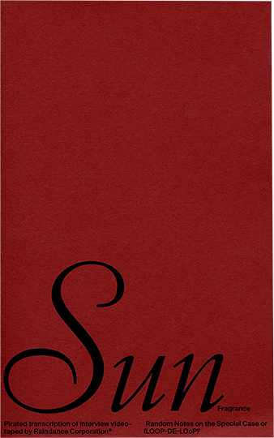
- The Production of Culture is Shared*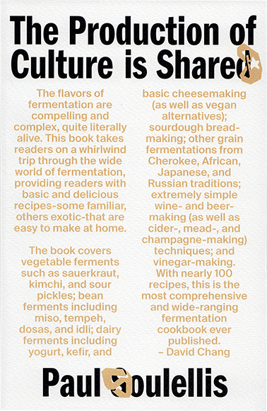
- Today Absolute Elsewhere*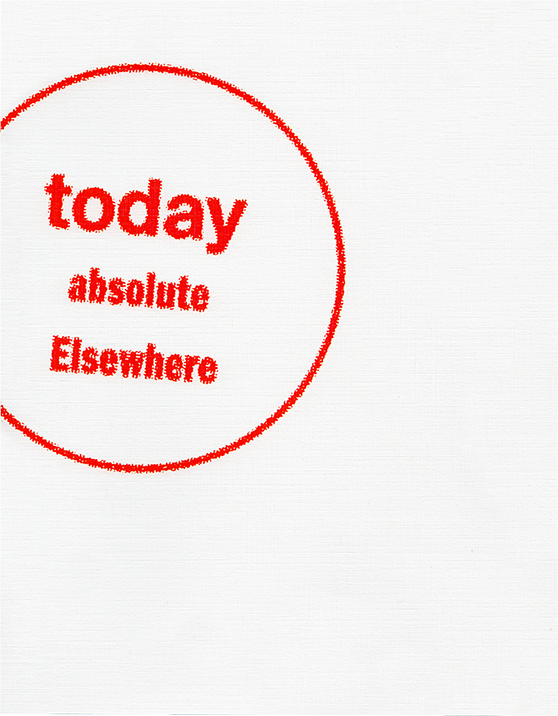
- Total Beloved Disengagement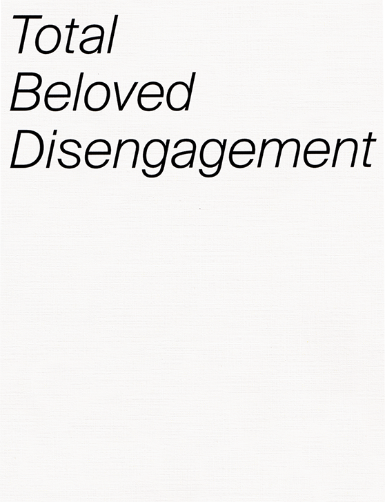
- Without My Hairstylist I Couldn’t Have Made It*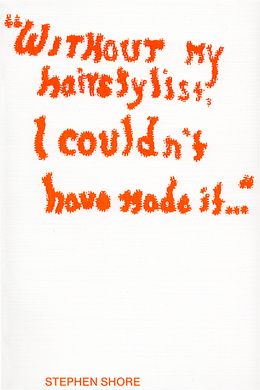
- Writing About Only What is Here*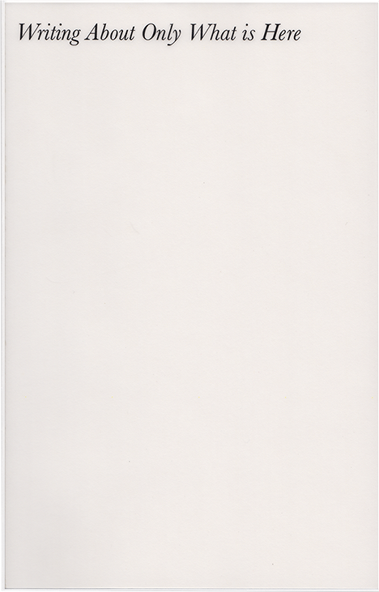
*Already gifted